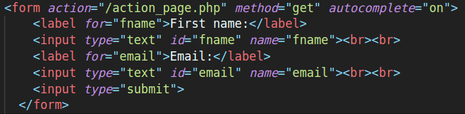

Atividade 04
Alunos: Carlos Eduardo, Ivan Felipe, Cklever Cavalcante
Definição de parâmetros para o input:
- No HTML, o elemento input é usado para criar controles interativos para formulários
baseados na web para receber dados do usuário.
- O atributo HTML input type é usado para especificar o tipo de elemento input a ser exibido.
- A semântica de um input varia consideravelmente dependendo do valor de seu atributo
type.
O atributo de preenchimento automático
O atributo input autocomplete especifica se um formulário ou um campo de entrada deve
ter o preenchimento
automático ativado ou desativado.
O preenchimento automático permite que o navegador preveja o valor. Quando um usuário começa a digitar em um
campo, o navegador deve exibir opções para preencher o campo, com base nos valores digitados
anteriormente.
O atributo autocomplete funciona com
form os seguintes tipos input: texto, pesquisa, url, tel,
email, senha, datepickers, intervalo e cor.
Dica: Em alguns navegadores, pode ser necessário ativar uma função de preenchimento
automático para que isso
funcione (procure em "Preferências" no menu do navegador).
